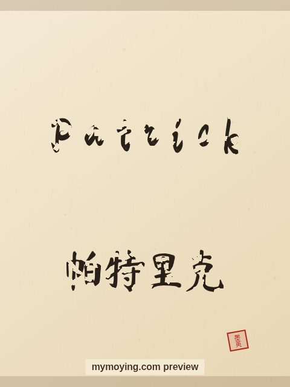

Patrick in Chinese Calligraphy
A brush-drawn preview of Patrick, with the Chinese characters 帕特里克 (Pà tè lǐ kè) and a note on what the name means.

Sample. “Patrick” in the Regular (楷书) brush style with the Chinese name 帕特里克 (Pà tè lǐ kè). The paid file removes the watermark.
The Chinese characters for Patrick
As a transliteration, Patrick is usually written 帕特里克 (Pà tè lǐ kè). Each character is listed below with its own dictionary meaning — the name is chosen by sound, not by meaning, and Moying does not translate names. Please have a person review the characters before any permanent use such as a tattoo.
Origin and meaning
Patrick comes from Latin and means “nobleman”.
About the name Patrick
Saint Patrick is the patron saint of Ireland.
As a gift or a tattoo
People often order Patrick as a framed gift or as a tattoo — the meaning, “nobleman”, is part of the appeal.
Open Patrick in the generatorFree watermarked preview. $1.99 once for a clean high-resolution download of this name in every style and setting. No subscription. Digital product, delivered instantly; see Terms.